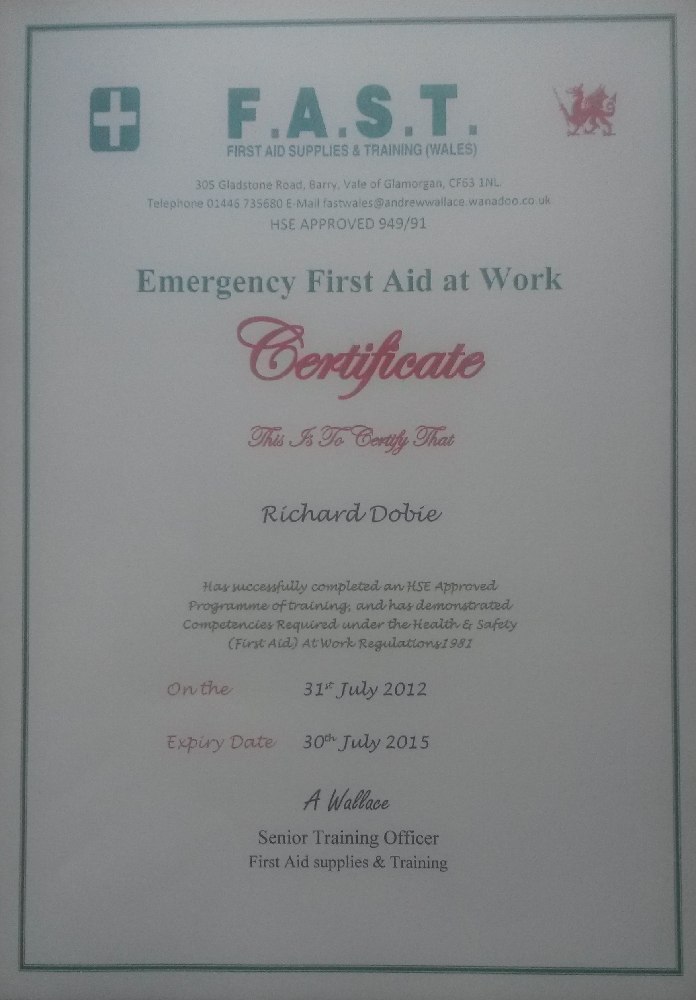
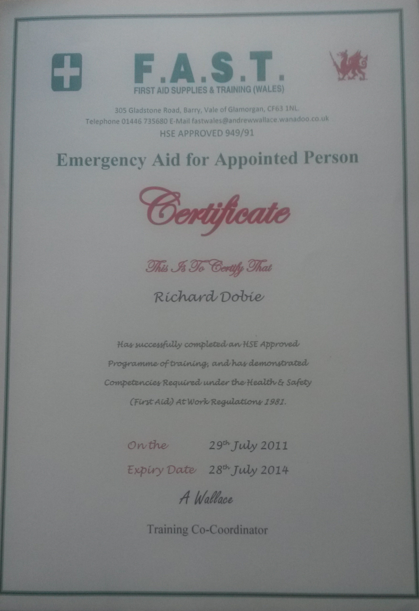
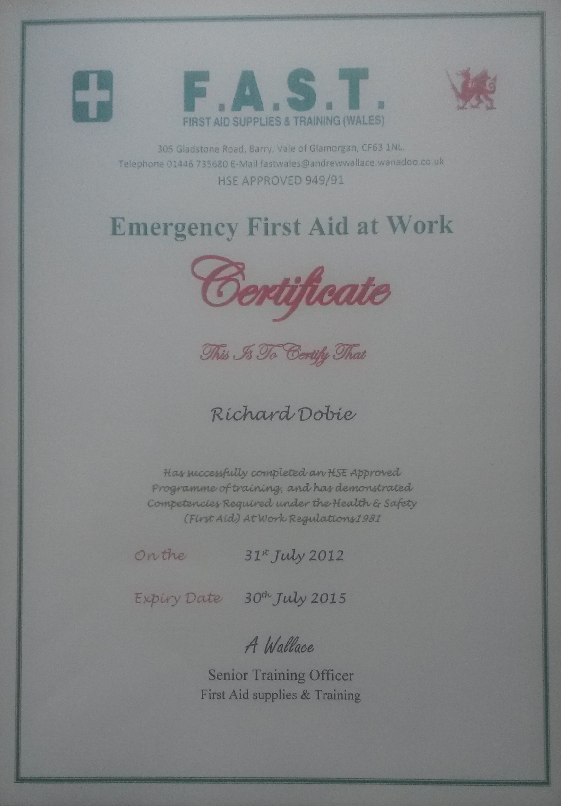
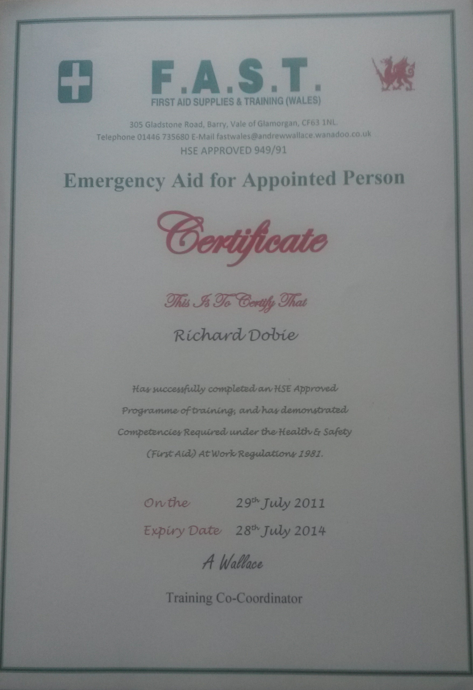
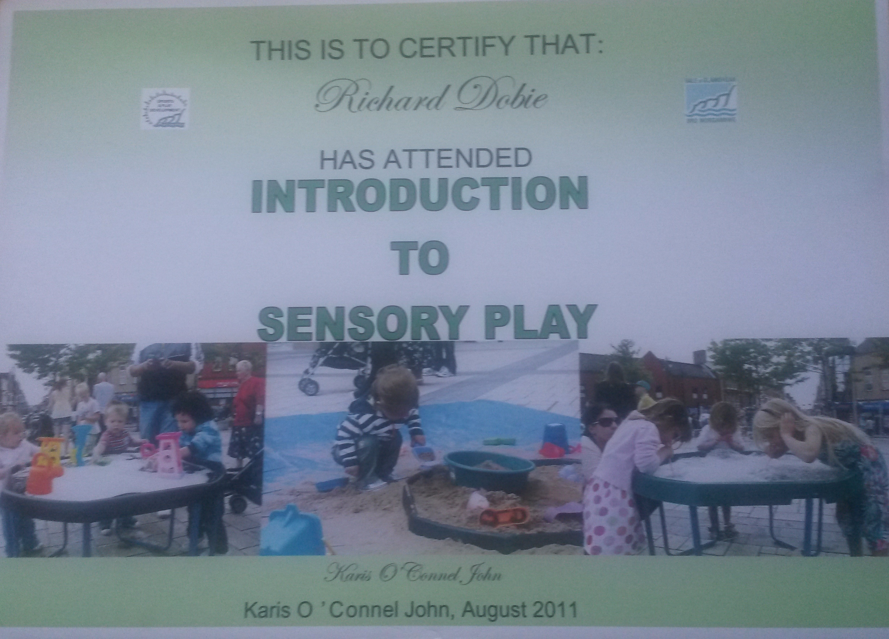
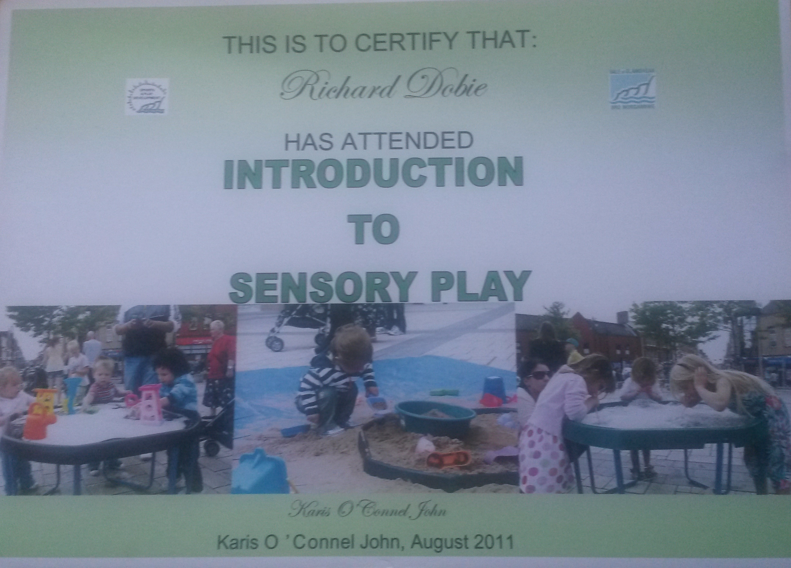
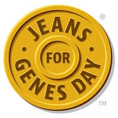
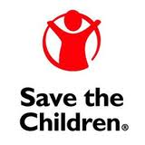
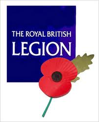

About Me
My name is Richard Dobie. I was born in Swindon on the 15th October 1994.I am 19 years old.I live in Barry which is in the Vale Of Glamorgan with my Mum and Older Brother.I have lived in Barry for 10 years.I attended St Cyres Comprehensive School to do my GCSE's and As and A levels. I currently attend the University Of Gloucestershire as a Computing Undergraduate My hobbies and interests include keeping fit by going to the gym and running aswell as other sports such as tennis,badminton and squash Volunteering is an interest of mine of which i worked for 6 weeks for the Vale Of Glamorgan Council Summer Playscheme. This Volunteer work was how my interest in First Aid began and enabled me to gain a certificate in two first aid qualifications aswell as other qualifications to do with play and disability play. The Qualifications i have achieved are:
- First Aid Appointed Person
- Emergency First Aid At Work
- Child Protection Level 1
- Introduction To Playwork
- Manual Handling
- Introduction to Sensory Play

 



 

My Role enabled me to put my qualifications into practise as i was one of a few designated first aiders aswell as enjoying the opportunity to interact with children with various disabilities and help and support them to be able to have access to play and be able to integrate and play with other children. outside of volunteering i have been involved in many charities both through school and outside of school which included collecting money for charities such as jeans for Genes,Tenovus,Marie Curie,Save the Children and selling poppies for the Royal British Legion
  